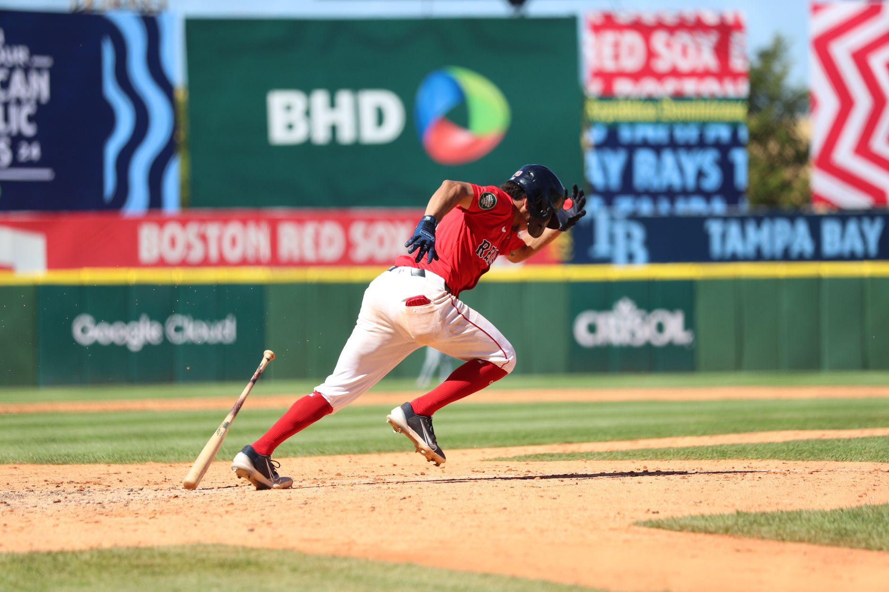

The magic of the division series
The Division Series often serves as the ultimate testing ground for young talent and seasoned veterans alike. It is during these intense matchups that we see the gap between a good regular season and a championship-caliber roster. The pressure of single-elimination potential or short series formats forces managers to make high-stakes decisions that can change the course of a franchise's history.
This year, the Division Series provided several instances of pure adrenaline. We saw unexpected underdog stories emerge from the middle of the pack, challenging the giants of the league. The tactical battles between pitching coaches and hitting instructors reached a fever pitch, resulting in some of the most disciplined performances we have seen in recent memory.
Defining moments in the league championship series
Moving into the League Championship Series, the intensity shifts from excitement to sheer desperation. Every pitch carries the weight of an entire city's expectations. This is where the best moments transition from mere highlights into legendary status. We saw pitchers throwing complete games under immense pressure and hitters finding gaps in defenses that seemed impenetrable.
In the postseason, you do not play against the team; you play against the weight of the moment itself.
The standout moment of the LCS this year involved a dramatic seventh-inning rally that turned a looming shutout into a historic comeback. It was a display of resilience that reminded fans why baseball is often called a game of inches. The momentum shifts were violent and sudden, leaving fans on the edge of their seats from the first pitch to the final out.
The grand stage of the world series
The World Series represents the pinnacle of professional baseball. When the two best teams collide, the atmosphere is unlike anything else in sports. The highlights from this series were not just about the statistics, but about the emotional journey of the players. We witnessed tears of joy, expressions of heartbreak, and the sheer exhaustion of athletes who had given everything to reach this stage.
One specific moment stood out: a walk-off home run that sent the stadium into a frenzy. It was a swing that defied physics and logic, proving once again that in the postseason, anything is possible. Such moments become the talking points for sports analysts for years to come, serving as the benchmark for greatness in the sport.
Why postseason highlights matter to fans
For many fans, these moments are the reason they fall in love with baseball. It is not just about the regular season grind; it is about the sudden, explosive bursts of brilliance that occur when the stakes are highest. These highlights create a shared cultural experience, bringing together millions of people across the globe to witness history.
Analyzing these moments helps us understand the evolution of the game. We see how advanced analytics are being used in real-time to counter specific hitters, and how the physical conditioning of players allows them to maintain peak performance through the grueling October schedule. Every highlight is a data point in the ongoing story of baseball excellence.
Looking back at historic championship runs
As we celebrate the current highlights, it is important to remember the historic runs that paved the way. Every great champion builds upon the legacies of those who came before them. The grit and determination displayed this year echo the legendary performances of past eras, bridging the gap between generations of baseball enthusiasts.
If you are looking for more incredible stories of triumph, you must read about how the Milwaukee Brewers Win First Ever World Series Title, a landmark moment in baseball history that changed the landscape of the league forever. Much like the highlights we discussed today, that victory was built on moments of pure magic and unyielding spirit.
See Also
If you enjoyed this Baseball News article, check out Milwaukee Brewers Win First Ever World Series Title for more useful reading.